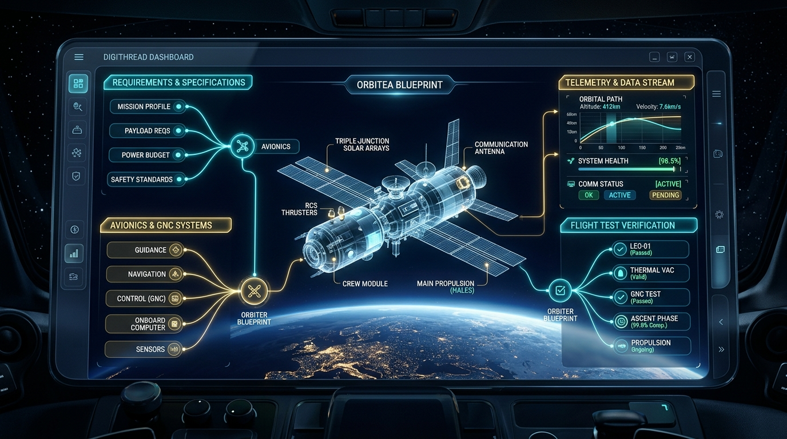
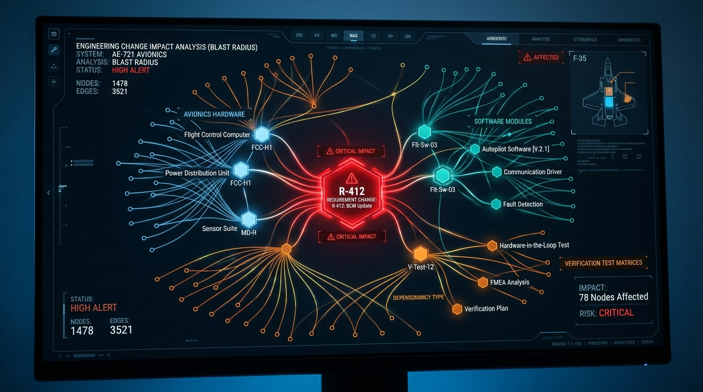

PDLC Platform
The unified digital thread operating system for aerospace & defense systems engineering.
"Traceability from initial mission need to flight test evidence."

The $50B Systems Engineering Crisis
Building high-consequence aircraft, launch vehicles, satellites, and defense platforms requires coordinating thousands of interconnected requirements. Today's workflow is broken.
Fragmented 1990s Tools
Teams are trapped in archaic desktop software (IBM DOORS) or disconnected Excel spreadsheets and Jira tickets. Cross-discipline collaboration is impossible.
The Blast Radius Blindspot
A single requirement or pinout change late in development ripples silently through subsystems—discovered only during qualification or catastrophic flight test failure.
Crushing Audit Overhead
Engineers waste 30–40% of program budgets hunting down test evidence and manually compiling compliance matrices for FAA, DoD, and ESA auditors.
PDLC Platform: Connected Digital Thread
An immutable, graph-based architecture connecting mission intent directly to physical verification.
🎯 100% Bidirectional Graph
Navigate upstream from a failed sensor telemetry point directly to the requirement and stakeholder requirement that justified it.
🧠 Institutional Decision Memory
Capture trade-offs, alternatives considered, assumptions, and sign-offs as first-class citizens. Zero lost knowledge when senior talent retires.
📋 Standard-Agnostic Compliance Tracking
Define your own certification basis and compliance items against whatever standard your program answers to — no manual matrix compilation, backed by an immutable, append-only audit log.
Automated Impact Analysis & Blast Radius
When a requirement or subsystem interface changes, the PDLC platform traverses the dependency graph to compute the full blast radius across software, hardware, and verification runs.

A $35B+ High-Consequence Engineering Market
Massive inflection point driven by private space commercialization, eVTOL urban certification, and defense modernization.
Global Systems Engineering, Product Lifecycle Management (PLM), and ALM software spend.
Safety-critical aerospace, defense, autonomous systems, and spaceflight programs.
Commercial NewSpace startups, eVTOL certification teams, and agile defense Tier-1 suppliers.
Constellations & launch vehicles
Drones, missiles, radar suites
eVTOL type certification
Subsea & safety robotics
Why PDLC Dominates Legacy & Modern Generalists
| CAPABILITY / ATTRIBUTE | IBM DOORS (Legacy) | JAMA CONNECT | JIRA / CONFLUENCE | PDLC PLATFORM |
|---|---|---|---|---|
| Modern Web UI / UX | ❌ 1990s Desktop | ⚠️ Clunky / Complex | ⚠️ Generic UI | ✅ Next.js 16 + Tailwind |
| Full Digital Thread Graph | ⚠️ Requirements Only | ⚠️ Partial Links | ❌ Disconnected Tickets | ✅ Needs $\rightarrow$ Tests Graph |
| Automated Blast Radius | ❌ Manual Process | ⚠️ Basic Suspect Links | ❌ None | ✅ Instant Graph Traversal |
| Decision Rationale Memory | ❌ Lost in Emails | ❌ None | ⚠️ Scattered Comments | ✅ Dedicated First-Class Model |
| Air-Gap & GovCloud Native | ✅ On-Prem Desktop | ⚠️ Heavy Enterprise | ❌ Sunsetting Server | ✅ Lightweight Docker Compose |
| Data Portability / No Lock-In | ❌ Proprietary DXL | ❌ Proprietary Cloud | ❌ Proprietary Cloud | ✅ Open PostgreSQL + Prisma |
Engineered for Sovereign Defense Environments
Strict multi-tenant scoping, cryptographic audit trails, and zero external cloud phone-home requirements.
Self-Hosted, No External Dependencies
Runs disconnected on infrastructure you control — no managed database, no managed auth provider, no external API call to do its job.
Composite Tenancy Guard
All engineering entities are strictly scoped by composite keys: (Organization, Project) preventing cross-tenant leakage.
Immutable Audit Ledger
Every requirement alteration, test result submission, and approval is written to an append-only log with no application code path to edit or delete it.
High-ACV Enterprise & Defense Program Model
Enterprise SaaS
- • Dedicated cloud instance (GovCloud/Commercial)
- • Systems, Test & Software seat tiers
- • Automated verification matrices
- • Standard API connectors
Program License
- • Air-gapped / on-premise installation
- • Unlimited seats per discrete program
- • Classified environment support
- • Dedicated security updates & audits
Migration & Integration
- • Automated legacy DOORS/Excel ingestion
- • CAD/PLM (Teamcenter, Windchill) pipelines
- • Custom compliance templates (ARP4754A)
- • Team training and onboarding
Strategic Product Roadmap
The Full Engineering Lifecycle
- ✅ Requirements, design items, decisions & verification, each with a real lifecycle
- ✅ Real change-impact analysis, not a hard-coded result
- ✅ Engineering baselines, drift detection & configuration comparison
- ✅ Certification workspace: basis, compliance items, findings, review
- ✅ Decision Sentinel: continuous surveillance for stale analyses
- ✅ Supplier, risk, issue & evidence tracking, fully traceable
- ✅ Command Center, Engineering History & full traceability graph
- ✅ Self-hosted PostgreSQL 17 & Argon2id auth, no third-party dependency
Ecosystem Integration
- • Cameo / SysML bidirectional sync
- • Siemens Teamcenter & PTC Windchill connectors
- • Automated DOORS migration suite
- • Hardware-in-the-loop (HIL) telemetry ingestion
Deeper Program Operations
- • Multi-project and cross-program rollups
- • Exportable, formatted compliance and traceability reports
- • Bulk import/export tooling for legacy migration
- • Deeper CI/CD and PLM connector coverage
Raising $3.5M Seed
To accelerate product delivery, achieve FedRAMP / GovCloud authorizations, and capture the NewSpace and aerospace defense modernization surge.
Scale distributed systems, security, and aerospace systems domain engineers.
Defense sales specialists with active clearances & commercial space leads.
SOC2 Type II, ISO 27001, and GovCloud High readiness certification.